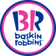

제이쿼리_문서객체조작(DOM) 관련메서드
문서객체조작이란? DOM(문서객체모델)에서 HTML문서안에서 모든 요소들과 내용들을 제이쿼리를 사용하여 글자를 변경하거나 추가, 삭제, 속성값을 변경할 수 있는 것을 말한다.
https://oscarotero.com/jquery/페이지의 API에서 'ATTRIBUTES', 'MANIPULATION' 카테고리에서 메소드 확인가능.
문서내용을 변경하기 위한 메서드
- $('대상').text(); - html요소를 선택하여 내용을 입력하거나 가져오기 위한 메소드
- $('대상').html(); - html요소를 선택하여 html태그요소를 추가하거나 가져오기 위한 메소드
- $('대상').attr(); - html요소를 선택하여 속성값을 추가하거나 변경하기 위한 메서드
- $('대상').val(); - html요소를 선택하여 input요소의 속성값을 추가하거나 변경하기 위한 메서드
- $('대상').empty(); - 내용지우기
- $('대상').remove(); - 요소지우기
- $('대상').addClass(); - 클래스 추가하기
- $('대상').removeClass(); - 클래스 제거하기
- $('대상').hasClass(); - 클래스 존재여부확인
- $('대상').toggleClass(); - 클래스 토글 적용
- $('대상').appendTo(); - 부모내용 마지막 위치로 이동하기
- $('대상').prependTo(); - 부모내용 처음 위치로 이동하기
아래 text(); 버튼을 클릭하면 이곳에 텍스트 내용이 변경됩니다.
아래 html(); 버튼을 클릭하면 이곳에 html태그요소가 추가되어 변경됩니다.
attr()메서드를 활용하여 베스킨라빈스 로고 이미지 변경하기
.attr(); - attribute(속성)의 약자로서 사용자가 선택한 html요소의 속성을 선택하여 값을 가져오거나 변경하고자 할 때 사용한다.
작성법) .attr('속성','값'); 또는 .attr('속성');

네이버 링크 주소를 다음주소로 변경하기
네이버
쿠팡참고하여 메뉴에 마우스 오버시 해당 이미지가 나오게 하기